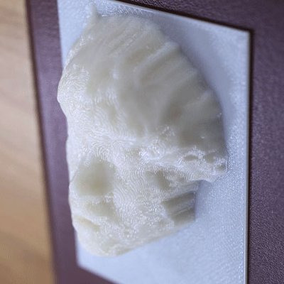

PCDとは
PCDとは、Processing Community Day(プロセッシング・コミュニティー・デー)の略です。
Processing のユーザーの交流イベントで、アートとプログラミングのコミュニティの多様性を祝って 世界各地で開催されています。
日本では ライゾマティクス 真鍋大度 様、イレブンプレイ MIKIKO 様、OpenProcessing 様の協力のもと、2021年2月20・21日に オンライン にて開催されます。
Processing のパイオニアや若手アーティストらによる講演やワークショップを通じて、
クリエイティブなハックやアートに直に触れることができます。
Processing のユーザーの交流イベントで、アートとプログラミングのコミュニティの多様性を祝って 世界各地で開催されています。
日本では ライゾマティクス 真鍋大度 様、イレブンプレイ MIKIKO 様、OpenProcessing 様の協力のもと、2021年2月20・21日に オンライン にて開催されます。
Processing のパイオニアや若手アーティストらによる講演やワークショップを通じて、
クリエイティブなハックやアートに直に触れることができます。
>
Processing Community Day
Worldwide
> PCD Tokyo 2020 ウェブサイト
>
PCD Tokyo 2019 ウェブサイト
>
PCD Tokyo 2019 レポート（稗田）
>
PCD Tokyo 2019 レポート（永松）
Processingとは
マサチューセッツ工科大学メディアラボ発祥の教育用プログラミング言語で、世界中で親しまれています。プログラミングの入門だけでなく、メディア・アートや科学研究など幅広い分野で用いられています。
開催概要
Processing を作品制作に活用しているアーティストや
研究者の基調講演やライトニングトーク（一人10分程度のプレゼンテーション）等を企画しています。
また、初学者向けのワークショップや、インタラクティブ、グラフィック、デザイン、機械学習といった
様々なテーマに特化したワークショップも行います。
少人数に分かれての集中型のものを複数企画しており、講師と対話しながら学ぶことができますので、
初学者や独学者たちも奮ってご参加ください！
日時
2021.2.20 (sat) / 21 (sun)
場所
ハッシュタグ
Timetable
2月13日(土)~
> デイリーコーディング + 3D Gallery : #PCD2021をつけて作品をtwitterで投稿すると3D空間に展示されます 
> PCD Japan Gallery: 誰でも作品を投稿できます。みんなの作品を覗いてみよう
2月20日(土)
> 17:00 ~ 18:00: キーノート by. 山辺真幸
> 18:00 ~ 19:00: トークセッション～自分らしくクリエイティブな活動をするには～ by. ayakooo, ちにゅり, 菅野創
2月21日(日)
> 13:00 ~ 15:00: ワークショップ「Generative Illustrations」by. サヤマ
> 18:00 ~ 19:00: ワークショップ「ライブコーディング」 by. 岡千穂
Keynote

■山辺真幸 (20日/17:00~)
新型コロナの実像をビッグデータで映し出すーProcessingによるデータ・ビジュアライズー
世界で拡大を続ける新型コロナウイルス、その終息は未だに見通せません。拡大を押さえ込む糸口を掴むためにウイルスに関する様々なビッグデータの解析が世界各国で行われています。本講演は最新研究により明らかになったウイルスの実態をビッグデータで可視化し、NHKスペシャル、クローズアップ現代＋で放送した高精細なデータ・ビジュアライズと、Processingを使用した制作舞台裏を紹介します。
Talk Session

■ayako, ちにゅり, 菅野創(20日/18:00~)
～自分らしくクリエイティブな活動をするには～
電子音楽やイラスト、メディアアートなどさまざまな分野で活躍している旬のクリエイター三名をゲストに迎え、先のわからないこの時代にクリエイティブな活動を続けていくにはどうしたらいいのか、司会のひえだが率直な疑問をぶつけていきます。進路に悩んでいる学生のみなさん、クリエイティブ・コーディングを生かしたキャリアプランに興味を持っているみなさん必見です！
Workshop

■サヤマ (21日/13:00~)
Generative Illustrations ／ p5jsでグラフィックガチャをつくる
クリエーティブコーディングって丸や四角がならんだ抽象的な表現のイメージが強いかもしれませんが、具象的モチーフをジェネラティブに描いてみるのも面白いです。
モチーフを描画メソッドに落とし込む → パラメーターに乱数を代入して多量に生成 → つくった自分もびっくりな予想外の形や色の組み合わせが現れる（具象的だからこそ生じる、イメージと生成結果とのギャップが楽しい！）
このようなグラフィックガチャ的なものをつくりながら、p5jsでビジュアル表現を楽しむ手法をご紹介します
■岡千穂 (21日)
TidalCyclesワークショップ「MiniTidalサバト」
これはTidalCyclesのサブセット（a.k.a.
簡単バージョン）であるMiniTidalと数字の６を使ったオンライン・ワークショップ集会です。Estuaryというブラウザで開けるプラットフォーム、MiniTidal（a.k.a.
簡単バージョン）、数字は６しか使わないので、今までにコードを書いたことがない魔女でも大丈夫。インストールも必要ありません。
※Google Chrome、イヤホン・ヘッドホン推奨